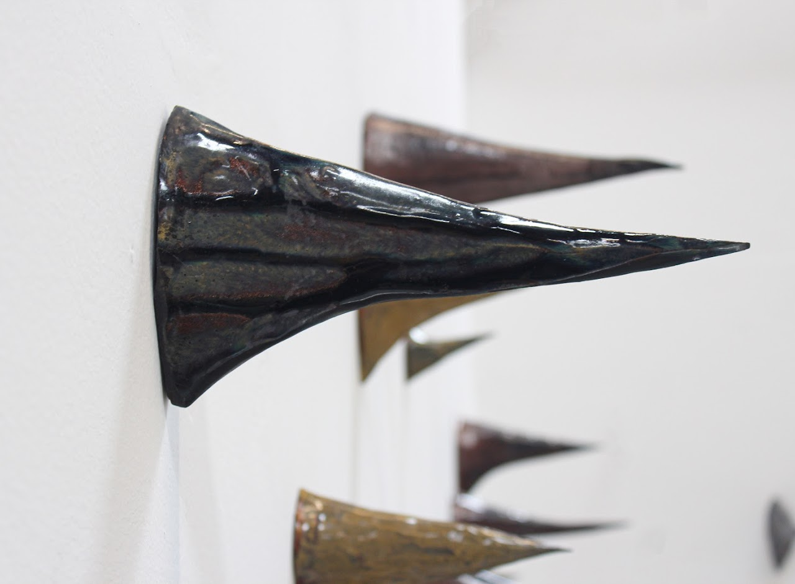
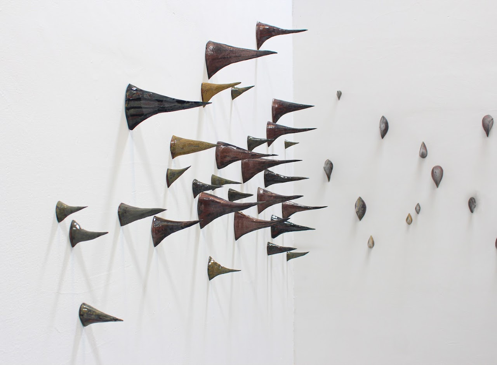

ANXIETY STATE II
2023 · As part of the "Navigation" project · Jam Factory, Lviv, 2023 · ceramics, installation

Concept
We share a persistent sense of anxiety. Certainty has vanished, and with it the feeling of security. Safe places no longer exist. Anything can be perceived as a threat, even the most familiar, everyday forms. There may be no immediate danger, yet the body remains alert. The heart continues to race. Once-comfortable spaces begin to sprout thorns. It is unclear where they emerge from or whom they are meant to address. Are they defensive or aggressive. Do they protect, or do they injure. This constant vibration defines an anxious state. This project emerged from reflections on how our land art work Anxious State could be transferred into a gallery space without altering its meaning. We have long been engaged with the problem of representing land art and environmental works within institutional contexts. Such projects are inseparable from their natural environments, and photographic documentation alone feels insufficient and inert. For this reason, each presentation becomes an attempt to develop alternative forms of translation, allowing the work to retain its tension, ambiguity, and embodied experience within an indoor space.
 